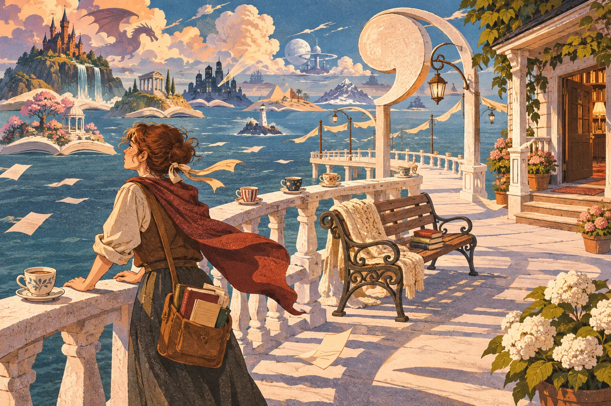
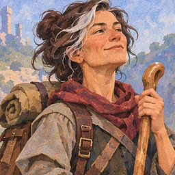
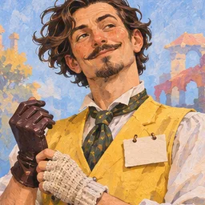

Рута Вей вышла из незаконченного романа с простым вопросом: что ей делать дальше? Она приглашает вас пройти по островам разных литературных жанров, попробовать их обещания и сочинить продолжение поступками. Не всякая загадка нуждается в виновнике, не каждое возвращение обязано означать победу, а счастливый день может обойтись без подвига. Вернуться из книг можно всегда. Но прожить сразу все понравившиеся жизни не получится.

Если партия изменила план
Перед чтением вступления сверьте место героев, присутствующих людей и предметы с итогом прошлого вечера. Если условия встречи отпали, сыграйте последствия там, где находится партия. Событие по расписанию может произойти за кадром. Герои узнают о нём от тех, кто был на месте.
Вечер 6. Если Рута выбирает читательское крыльцо сразу
Спросите, кто идёт рядом, а кто остаётся на островах. Сыграйте прощание от оборванной строки. Если Рута однажды захочет продолжить, первое слово останется за ней; последняя глава уже может закончиться паузой.
Группа отказалась от задания
Дописать роман отказываемся. Поставим на столе чистый лист для Руты, когда она захочет ответить. Оставляем Руте бумагу и возможность отказаться от продолжения. У книги остаётся открытая последняя строка. Человек за столом может закончить вечер без ответа.
Игроки раскрыли тайну раньше
Пойдём по следу за последней строкой и сверим его с текстом обещанного ответа. Доступные свидетельства — След после последней строки, Обещанный ответ. Рута уже действовала за пределами романа. Незаконченная фраза оставляет ей право самой выбрать продолжение. Слушаем, как Рута рассказывает о дне вне книги. Рассказ остановился в ожидании ответа. Мы можем предложить дорогу или дом, но не вправе выбрать следующую фразу за Руту.
Партия уступила поле
Бумажные великаны оттеснили лодку; выбранная переправа пропущена. Записываем собственное свидетельство, не придумывая победу героям. Читаем с ближнего берега и предлагаем следующую встречу там же. За рекой никто не обязан прийти на зов.
Карман ведущего
Для игры без подготовки: что говорят люди, места в стороне от главной дороги и прохожие. Пометки о правде слухов — только для ведущего; сказанное за столом становится фактом мира, лишь когда вы его подтвердите.
Слухи
«На Пристани Запятой чай до дна не допивают. Кто допьёт — тот уже не вернётся договорить, так и уйдёт с недосказанным».
Неправда. Обычай настоящий: глоток оставляют на удачу, и лоцман со скамьи напоминает о нём в первом вечере. Но с допившим ничего не случится: выход и возвращение открыты всегда. Если герои испытают примету, это хороший повод напомнить о дорожке в обе стороны.
«Девушка в зелёном пальто уже ходила на читательское крыльцо и вернулась. И имя при ней, и память, и чашка с отколотой ручкой».
Правда. Правда: Рута сама проверяла выход, это наблюдения «Дорожка в обе стороны» и «Чашка на прежнем месте» первого вечера. Слух повторяет открытое знание и пригодится, если кто-то за столом боится ловушки: выход безопасен с самого начала.
«Автор нарочно бросил Руту на полуслове. Запер её в последней строке и ждёт, кто допишет роман вместо него».
Неправда. Неправда: автор никого не запирал, не отнимал память и не оставлял тайного задания; причина недописанности неизвестна и для приключения не нужна. Так любят пугать друг друга читатели у крыльца. Рута спокойно опровергнет слух сама: она помнит свою жизнь и может к ней вернуться.
«Художница с полосатым зонтом ушла от стола сыщика, не сказав ни слова. А на нашей улице без слова не уходят — вот он и ищет причину».
Отчасти правда. Тавин и правда ищет причину ухода Мэйны, второй вечер. Но молча она не уходила: её последняя фраза записана в наблюдении «Две точные реплики». Никакого проступка за уходом нет, только граница разговора; не превращайте слух в обвинение.
«На большом путевом камне так и вырезано: Сая Тарн дошла до дальнего выступа и победила. Про неё полплато песен поёт».
Отчасти правда. Строка о победе на камне есть, и баллад о Сае много. Но под строкой мелкая приписка о том, как Сая повернула домой (наблюдение «Приписка под балладой», третий вечер). Пусть Сая покажет её сама; слух только задаёт ожидание победы, с которым спорит вечер.
«В Парке Преувеличений над шутками смеются все до одного. Кто не засмеётся — того самого сложат в бумажное сравнение и поставят у скамейки».
Неправда. Неправда. Бумажные воплощения бывают только в заранее объявленных добровольных упражнениях и никого не лишают имени. У Бель на груди карточка «Можно без шутки», а через парк идёт тихая дорожка. Бель охотно посмеётся над этим слухом в четвёртом вечере.
«У Норы из Дома Тихого Вторника в календаре есть часы, которые она не отдаёт никому. Даже хорошим людям, говорит».
Правда. Правда: Нора сознательно оставляет время себе, наблюдение «Календарь Норы» пятого вечера открывается без проверки. Почему она так решила, Нора расскажет сама, если спросят, чего она не хочет делать; слух этого не раскрывает.
«У редактора в бежевом костюме самое главное напечатано мелко, в самом низу. Чтобы подписали, не дочитав».
Отчасти правда. Мелкая нижняя строка есть (наблюдение «Нижняя строка предложения», шестой вечер), но это условие отказа: непринятие заканчивает только переговоры об издании. Касс не тайный злодей, перо для подписи не придвигает и показывает строку по первому прямому вопросу.
«Друг Руты, тот, что мастерит деревянные игрушки, в их книге чинил калитку. Страница сорок вторая, сам рассказывал».
Правда. Правда, Сэм говорит это в пятом вечере, если спросить о нём самом. Безобидная подробность показывает, что у Сэма своя любимая обычная жизнь, и помогает начать разговор о его собственном продолжении.
«В Салоне Незакрытых Скобок двери не запирают. Уйти можно посреди любой фразы, и никто тебе вслед ни слова не скажет».
Правда. Правда, так устроен салон шестого вечера: скобки над входом открыты, отказ ничего не отнимает. Слух полезен игрокам, которые опасаются переговоров с Кассом: можно уйти подумать, а следующий вечер доступен и без сделки.
«Великанов на плато складывают из бумаги, для репетиций. Настоящих врагов там нет, сколько бы певцы ни пели про битвы».
Правда. Правда: «Упражнение с бумажными великанами» — отдельное добровольное упражнение третьего вечера, оно ничего не открывает. Слух пригодится столу, который хочет боя: предложите упражнение заранее и назовите, сколько времени прогулки оно займёт.
«Поймаешь в пене оброненную запятую — жди перемены. Значит, скоро передумаешь, хочешь ты того или нет».
Неправда. Суеверие: запятые в пене — просто часть бумажного моря, ловить их можно сколько угодно, и ничего не случится. Передумать здесь можно и без примет в любой момент; этим слухом удобно напомнить о праве пересмотреть решение.
Места в стороне
Будка лоцмана
Крохотная будка на сваях у края Пристани Запятой, выкрашенная белым, с синей полосой понизу. Внутри помещаются табурет, медный чайник и подзорная труба без стёкол: старый лоцман из морского романа уверяет, что так видно дальше. На двери висит колокольчик. Проходя мимо, его трогают, чтобы лоцман знал, что на воде спокойно. Если колокольчик молчит целый час, лоцман выходит проверить, не скучно ли кому-нибудь.
Сушилка для зонтов
Длинная железная стойка под навесом в конце Улицы Семи Зонтов, где сушатся чужие зонты. К каждой ручке привязана картонная бирка: когда хозяин оставил зонт и когда обещал вернуться. Зонты висят тут неделями, и никто их не трогает, потому что на этой улице чужое время уважают. Местные мальчишки подрабатывают тем, что по утрам встряхивают зонты и перевязывают размокшие бирки.
Колодец последнего куплета
Сухой каменный колодец у нижней тропы Плато Долгого Шага, без ворота и без ведра. Путники наклоняются над ним и пропевают последнюю строчку своей песни, чтобы услышать, как она звучит со стороны: эхо возвращается чуть медленнее и тише. Говорят, на победные строки колодец отвечает невнятно, а на простые — чисто и ясно. На закраине лежат гладкие камешки, их приносят снизу в благодарность.
Беседка «Самая тенистая тень»
Беседка под зонтиком-грибом в Парке Преувеличений, с табличкой «Самая тенистая тень всех морей». Тени под ней ровно столько, сколько под обычным деревом, но сюда приходят те, кто устал смеяться: внутри говорят шёпотом, а шутки рассказывают по одной в час. На столике лежит толстая тетрадь, куда гости вписывают шутки, которые решили не говорить вслух. Её никто не читает, и это, говорят, самая смешная книга парка.
Лавка подержанных обложек
Узкая лавка под лестницей Салона Незакрытых Скобок, где продают обложки книг, так и не получивших названия. Их перебирают, как старые открытки: на одной нарисована лодка без паруса, на другой дом без двери. Хозяйка лавки уверяет, что каждая обложка ждёт своей истории и когда-нибудь её дождётся. Покупать ничего не обязательно; многие заходят просто посмотреть, какие ещё бывают начала.
Мостки у Тихого Поля
Короткие деревянные мостки на краю Тихого Поля, уходящие прямо в бумажное море. С них удобно сидеть, свесив ноги: вода шуршит у самых пяток и ничего не уносит. Сюда приходят вдвоём договорить то, что не уместилось за отдельным столом, или просто помолчать. На крайней доске кто-то давно нацарапал «Досюда и обратно», и отсюда действительно удобно поворачивать.
Прохожие
Лоцман Брам
Седой старик в бушлате с медными пуговицами и в фуражке, надвинутой на нос; дремлет на краю скамьи для незаконченных разговоров и просыпается от любого вопроса.
«Море здесь никого не топит, юнга. Шуршит себе, как газета у соседа».
Может рассказать: Каждое утро ходит на читательское крыльцо за свежим кипятком и возвращается обратно: дорожка туда открыта в любой час.
Лима, хозяйка кафе
Полная женщина в клеёнчатом фартуке и косынке в мелкий горошек, с подносом чашек, перевёрнутых вверх дном.
«Чашка донышком вверх — садись кто хочешь. Донышком вниз — тут уже кого-то ждут».
Может рассказать: Художница с полосатым зонтом рисует вывески почти для всех окон улицы и больше всего любит заказы, которые не нужно делать в спешке.
Тим с плато
Мальчишка-пастух лет четырнадцати в овчинной безрукавке, с вязанкой вереска на плече и дудочкой, в которую он при чужих ни разу не дудел.
«Петь не умею, так я мурлычу. На плато молчком ходить не принято».
Может рассказать: Нижняя тропа приводит домой засветло, а у широкой площадки на верхнем пути ветер то стихает, то налетает снова.
Гурий Табличник
Длинный худой человек в халате, заляпанном краской, с ведёрком и кисточкой; каждое утро он перекрашивает таблички на скамейках парка.
«Вчера была „самая мягкая“, сегодня будет „мягче вчерашней“. Скамейкам тоже нужно расти».
Может рассказать: Тихую дорожку в Парке Преувеличений не подписывают и не украшают нарочно: на ней ничто не должно никого смешить.
Ада Почтальонша
Невысокая женщина в синей накидке, с сумкой через плечо, набитой конвертами без марок, и чернильным пятнышком на щеке.
«Писем без адреса не ношу. Но скажите, где будете завтра, — найду».
Может рассказать: Знает все межстрочные настилы между островами и ни разу не видела, чтобы кто-нибудь на них заблудился: по ним ходят в обе стороны в любой час.
Фила Корректорша
Строгая дама в пенсне, с красным карандашом за ухом и стопкой длинных бумажных полос под мышкой.
«Запятую поставить никогда не поздно. А с точкой подумайте ещё».
Может рассказать: В Салоне Незакрытых Скобок отказ от предложения записывают так же аккуратно, как согласие, и обе бумаги лежат в одной папке.
За десять минут до первой игры
- Откройте первый вечер, прочитайте правду мира и участников. Остальные вечера — планы, их исход решают игроки.
- Выберите пакет под фактическое число игроков. Первые три героя — готовое ядро; остальные добавляются по порядку. Возраст игрока не определяет героя.
- Согласуйте темы, длительность и сигнал паузы. Передайте игрокам только players.html; раздатки выдавайте по отдельности после указанного открытия.
- Откройте Мастерскую проекта, создайте личный черновик и импортируйте выбранный JSON через загрузку пакета. Проверьте состав и начало в предпросмотре. Запуск кампании подтверждает ведущий штатным действием.
- Откройте иллюстрацию завязки отдельно. Портреты героев входят в файл для игроков, портреты встречных — в книгу ведущего. Тактические схемы доступны в разделе карт.
Формат и темы
8 вечеров; 165 минут: вход и повторение 15, три сцены по 40, перерыв 10, завершение 20.
Бумажное море лежит между оригинальными книгами, которых нет в нашем мире. Острова соединяют обычные межстрочные настилы; никаких карт, ключей или судов для перехода не требуется. Жанр предлагает привычные ожидания и видимые бумажные метафоры, но не управляет волей. Люди могут спорить с условностью, менять занятие и выходить на читательское крыльцо. Магия и классы героев используют обычные фэнтезийные правила третьего уровня; литературный облик не добавляет новых автоматических способностей.
Тёплое любопытство, остроумные жанровые повороты, честная неловкость и личные решения без единственного правильного ответа.
- Авторство собственной жизни и помощь без присвоения чужого голоса
- Жанровые ожидания, дружба и разные способы быть смелым
- Право передумать, конечность времени и ценность обычного дня
Границы
- 12+, смешанный стол подростков и взрослых. До начала согласуйте неловкость, ожидания близких и добровольные расставания. Романтика только по отдельному согласию, для сюжета не требуется.
- Нет обязательного унижения, насилия над личностью, сексуальных сцен, натуралистических ран или угроз стирания. Чужие вкусы, возраст и способ речи не становятся мишенью юмора.
- Пас, пауза и уход из любой книги доступны без штрафа. Отказ от роли не меняет имя, память, характер или способности. Ведущий предлагает спокойную альтернативу той же важности.
- Острова и персонажи оригинальны. Не заменяйте их узнаваемыми героями чужих произведений и не подменяйте свободное сочинительство угадыванием литературных цитат.
Люди за столом
- В каждой сцене меняйте первого говорящего по кругу. Подросток и взрослый имеют одинаковое право на решение; возраст не назначает лидера, класс или героя. Говорить от всей группы можно только после согласования.
- Перед общим выбором каждый может произнести ответ, передать записку или сказать «пас». Пас не считается согласием на личное обещание. Ведущий отдельно уточняет согласие затронутого персонажа без давления.
- Предлагайте два равноправных вопроса: «Что ты сейчас сделаешь?» и «Какое ожидание это изменит?». Короткое конкретное действие и сложный разбор дают одинаковый доступ к последствиям и уликам.
- Для параллельной работы сначала соберите намерения всех, затем разрешайте группы по 4–5 минут. В конце каждой сцены собирайтесь в названной точке; ни один отряд не уходит на отдельный вечер.
- Первых трёх героев достаточно для всех решений. Наблюдение, разговор, помощь и авторская запись доступны любому классу; необязательные места 4–7 дают дополнительные вопросы, а не ключи к сюжету.
- Отсутствующий герой гуляет по безопасной межстрочной дорожке и возвращается к следующей общей сцене. Его личные обещания не принимают голосованием. Найденное за его отсутствие кратко пересказывают при возвращении.
- Ведите лист «Сыграно / Обещано / Пока не решено». Только реально сыгранные действия попадают в первый столбец. Никакого счётчика правильного жанра нет; запись служит памяти стола и не открывает проходы.
- После каждой жанровой сцены задайте всем один личный вопрос. Рута отвечает после игроков и может выбрать иной ответ; помогать ей означает обсуждать разногласие, а не выиграть контроль над её судьбой.
Масштабирование группы
3 игроков
Тая, Миро и Эна образуют полноценное ядро. Один проверяет наблюдение, второй пробует поступок, третий разговаривает, затем роли меняются. Любую задачу можно решить без специального класса; при разделении используйте пару и одного с короткими переключениями.
4 игроков
Состав по умолчанию добавляет Лиссу. Работайте двумя парами: действие и последствия. Перед общей сценой каждый вносит один собственный факт или вопрос, а рассказчик пары меняется.
5 игроков
Руэн добавляет независимый взгляд на риск. Разделяйте пятёрку на две пары и добровольного связного; связной тоже принимает отдельное решение и не превращается в секретаря. Меняйте распределение каждый вечер.
6 игроков
С Ореем работают три пары: действие, разговор, наблюдение. Разрешайте их намерения одним общим кругом с возвратом к месту встречи; никакая пара не имеет права обещать за другую.
7 игроков
Ними получает самостоятельный вопрос о границах помощи. Используйте группы 2/2/3 и три раунда коротких решений; каждый хотя бы раз начинает сцену. Перед финалом всем дают равное личное время, включая отказ от публичного эпилога.
Первое чтение вслух
Бумажное море начинается там, где обрывается строка. Вода в нём светлая и шуршит, как перелистываемая книга; волна набегает на сваи и откатывается с шелестом страниц. Над морем видны острова, и у каждого свой жанр и своя погода: под цветными зонтами одного моросит детективный дождь, с высокого плато ветер приносит обрывки баллад, над дальним парком то и дело взлетает слишком громкий смех, а в окне маленького дома горит ровный свет обычного вторника. Между островами тянутся широкие межстрочные настилы; по ним ходят без карт, без вёсел и без пропусков. Моряки здешних историй называют всё это Морем незаконченных продолжений: каждая недописанная книга оставляет в нём свой остров, и островов здесь больше, чем звёзд над пристанью. Под вашими ногами — Пристань Запятой, белая площадка с чашками на перилах и скамьёй для незаконченных разговоров. Здесь никогда не допивают чай до конца: оставляют глоток на случай, если разговор продолжится. Девушка в зелёном пальто ставит рядом с вами пустую чашку с отколотой, но гладкой ручкой. Волосы у неё подстрижены неровно, будто она сделала это сама и в спешке. «Я Рута Вей. В моём романе написано: „Завтра она узнает, кем должна стать“. Завтра так и не дописали. Я могу уйти домой, но хочу сначала решить, кем мне хочется быть. Поможете? Только не пишите ответ вместо меня». На мокрых досках у скамьи темнеет небольшой след ботинка. За спиной Руты виден открытый проход к обычному читательскому крыльцу: там горит лампа и стоит лавочка для тех, кто решил передохнуть. Рута ждёт, обхватив чашку ладонями.
Правда мира · только ведущему
- Роман «Рута и дальняя дверь» остановился на обещании будущего ответа. Автор не запер Руту, не украл её память и не оставил тайного задания. Причина недописанности неизвестна и не нужна для приключения. Рута помнит свою прежнюю жизнь и может вернуться к ней.
- Новые поступки Руты уже составляют её продолжение. Запись может сохранить их для читателя, но не создаёт право действовать. Это проверяется на пристани, в открытом деле Тавина, в возвращении Саи без победы и в отозванной шутке Бель; ни один путь не обязателен.
- Литературные условности поддерживаются привычками персонажей и предложениями рассказчиков. Бумажные воплощения возникают только в заранее объявленных добровольных упражнениях. Они не лишают имени, памяти или выхода и не заставляют принять роль.
- Касс предлагает выгодное готовое продолжение и искренне любит ясные сюжеты. Его издание не является единственным способом продолжить жизнь. Он знает собственные условия, но не может предсказать счастье Руты или отменить её решения.
- Сэм хочет дружить с Рутой, однако ему нравится оседлая жизнь с регулярными встречами. Он готов обсуждать перемены, но не обязан сопровождать каждое путешествие. Это различие планов, а не тайное предательство.
- Цена финала возникает из конкретных несовместимых обещаний: время в дороге нельзя одновременно провести дома, известная роль требует оговорённого труда, совместная жизнь требует согласия обоих. Ведущий не добавляет наказание за необычный жанр и не отнимает отвергнутые личности.
- Все поздние события условны. Рута имеет собственные предпочтения и право возразить; игроки предлагают, помогают и проживают последствия вместе с ней. При несогласии продолжение можно уменьшить, отложить или завершить безопасным выходом без победной декларации.
Восемь вечеров
- 1. После оборванной фразы — Познакомиться с Рутой, проверить свободу выхода и вместе прожить первое небольшое действие без предписанного продолжения.
- 2. Детектив без обязательного виновника — Проверить разницу между полезным вопросом и требованием объяснить человека; помочь возможному разговору без обязательного обвинения.
- 3. Баллада без победного конца — Выбрать предел собственного пути, прожить продолжение или возвращение и честно назвать итог без обязательной выдуманной победы.
- 4. Пикник преувеличений — Попробовать комическую условность на собственных добровольных обещаниях и увидеть, что смешная роль не обязана становиться постоянной.
- 5. Обычный вторник — Попробовать день без обязательного подвига и обсудить близость, которая не требует одинакового продолжения.
- 6. Название в обмен на завтра — Сравнить привлекательные готовые продолжения с собственным замыслом, назвать реальную цену и сохранить отдельное согласие каждого участника.
- 7. День без подсказчика — Прожить реальные самостоятельные действия, выдержать несовпадение чужого выбора со своим советом и проверить выполнимость обещаний.
- 8. Первая фраза дальше — Осуществить первый поступок выбранного продолжения, честно принять его конкретную личную цену и дать каждому герою отдельный эпилог.
Места
Бумажное море
Светлая вода из шорохов: волны шелестят, как страницы, а в пене иногда мелькают оброненные запятые. Вода окружает острова отдельных историй, и над каждым стоит своя погода — дождь детектива, ветер баллады, ровное солнце обычного вторника. Широкие межстрочные настилы ведут между островами и к читательскому крыльцу. Ходить по ним можно в обе стороны, без карт и пропусков.
Пристань Запятой
Белая площадка над светлой водой. На перилах стоят чашки — кто-нибудь всегда оставляет здесь недопитый чай, и никто его не убирает. Скамья для незаконченных разговоров отполирована до блеска. С одного конца пристани видны жанровые острова, с другого — обычное крыльцо читателя. Здесь говорят, что запятая — самое честное место в книге: сказано уже многое, а решено ещё ничего.
Улица Семи Зонтов
Дождливый городок камерных детективов, где тёплая морось не прекращается, но никогда не промачивает насквозь. Под семью цветными зонтами стоят столики для вопросов, а чашки на них расставлены по времени прихода гостей. На окнах мелом пишут время встреч, вывески рисуют от руки. Местные уверены, что у любой ссоры есть мотив, и спорят об этом за чаем до самого вечера.
Плато Долгого Шага
Остров героических баллад: каменное плато под высоким небом, с широким уступом наверху и удобной нижней тропой для тех, кто не спешит. На путевых камнях вырезаны имена путников и строки старых песен. Ветер пахнет вереском и относит обрывки припевов к далёким домам. Говорят, по плато никто не ходит молча: даже те, кто не умеет петь, мурлычут что-нибудь себе под нос.
Парк Преувеличений
Остров комических рассказов, где всё немного чересчур: зонтики похожи на грибы величиной с беседку, скамейки подписаны громкими сравнениями вроде «Самая удобная скамья всех морей». Пахнет лимонадом и сахарной пудрой, отовсюду доносится смех. Между весёлыми столами вьётся тихая дорожка без обязательных шуток: по ней можно пройти, никого не смеша и ничему не смеясь.
Дом Тихого Вторника
Небольшой дом повседневной прозы с геранью на подоконнике и часами, которые тикают неторопливо и ровно. Свободный стол накрыт клетчатой скатертью, у окна стоят три кресла, возле одного — мягкие тапочки хозяйки. Пахнет яблочным пирогом и свежевыглаженным бельём. Здесь можно погостить, договориться о следующем визите или просто помолчать: тишина в этом доме не считается неловкой.
Салон Незакрытых Скобок
Светлая комната с высокими окнами, где будущие книги получают пробные названия. Стены увешаны образцами обложек, на подставках лежат аккуратные папки с предложениями издателя, пахнет типографской краской и кофе. Рядом с каждой подставкой — стопка чистой бумаги для собственного варианта. Скобки над входом нарисованы открытыми, и двери не запираются: уйти можно посреди любой фразы.
Тихое Поле
Широкая белая полоса между историями, похожая на поля страницы. Здесь растёт короткая светлая трава, а посередине стоят солнечные часы, тень которых движется обычным неспешным ходом. Несколько отдельных столов расставлены далеко друг от друга; у каждого есть право на тишину и своя дорожка к общей скамье. Сюда приходят, когда хочется подумать без рассказчика за плечом.
Мост Последней Фразы
Низкий деревянный мост над тихой водой ведёт к дальней двери из романа Руты. Дверь стоит на другом берегу одна, без стены вокруг, с простой медной ручкой. Над перилами висит одно недописанное предложение, и буквы чуть покачиваются на ветру. Возле него можно остановиться, повернуть обратно или продолжить шаг: мост никого не торопит и не задерживает.
Читательское крыльцо
Открытый деревянный порог между бумажным морем и привычным миром посетителей. Над дверью горит лампа, на подоконнике стоят чашки тех, кто вышел ненадолго, а на лавочке удобно ждать друзей. Отсюда слышно, как шуршит море, и пахнет самым обычным чаем. Ничьё имя, память или вещи не остаются платой за выход: уходят с тем же, с чем пришли.
Рута Вей

24 лет. Зелёное пальто, неровно подстриженные волосы и чашка с отколотой, но гладкой ручкой. Героиня незаконченного романа просит спутников помочь ей выбрать продолжение. Может уйти из книги и охотно показывает дорогу к выходу.
Место: Пристань Запятой
Намерение
Прожить решение, которое она узнает как своё, и сохранить дружбу без обязательства соглашаться во всём.
Собственные знания
- Помнит свой роман до фразы «Завтра она узнает, кем должна стать» и помнит, как самостоятельно вышла на пристань.
- Сэм был её другом до путешествия; она не знает его нынешних планов, пока они не встретятся.
- Лично проходила на читательское крыльцо и вернулась без потери имени или памяти.
Секрет или личное убеждение
Она боится, что друзья назовут обычную спокойную жизнь разочаровывающим финалом. Это её опасение, а не известное ей мнение спутников.
Граница и раскрытие
Не знает причины молчания автора, правил всех жанров или будущего решения друзей. Никогда не сообщает счастливый финал как уже известный факт.
После вопроса о её собственном желании признаётся в страхе разочаровать спутников. Если за неё выбирают голосованием, спокойно просит остановиться и обсуждает меньший совместный шаг.
Тавин Ров

43 лет. Длинный плащ, жёлтый зонт и мел на пальцах. Любит расставлять чашки по времени прихода гостей. Детектив объясняет любую ссору как дело с мотивом и развязкой. Сейчас хочет понять, почему Мэйна перестала приходить к его столу.
Место: Улица Семи Зонтов
Намерение
Вернуть возможность разговаривать с Мэйной, желательно получив ясное объяснение собственной ошибки.
Собственные знания
- Помнит свои вопросы Мэйне и порядок последней встречи под зонтами.
- Лично прекратил старое расследование без обвинения; его быт и имя после этого сохранились.
- Видел Руту только после её прихода на улицу и знает о ней лишь сказанное при нём.
Секрет или личное убеждение
Раньше он оставил одно дело открытым и прожил после этого много совершенно обычных дней. Ему неловко признавать, что новая уверенность нужна прежде всего ему самому.
Граница и раскрытие
Не знает внутренних причин Мэйны, если она их не сообщила. Может выдвигать гипотезы, но ведущий обозначает их словами «Тавин предполагает».
Показывает незакрытый старый блокнот, если его спрашивают об опыте неопределённости или предлагают не назначать виновного. Отказ от обвинения не требует проверки.
Мэйна Кер

31 лет. Светлая жилетка, полосатый зонт и жестяная коробка с цветными мелками. Рисует вывески на окнах и предпочитает сначала слушать вопрос целиком. Может сама решить, хочет ли объяснять свой уход.
Место: Улица Семи Зонтов
Намерение
Встречаться с Тавином как с другом, а не как со свидетелем в бесконечном деле.
Собственные знания
- Точно помнит собственную последнюю фразу Тавину: «Сегодня я не хочу быть разгаданной».
- Видела, как он записал время её ухода, но не читала его новых предположений.
- Ей подходит короткая встреча без расспросов; согласие на будущую дружбу она ещё не давала.
Секрет или личное убеждение
Она ушла не из-за одной разоблачительной фразы, а потому что устала отвечать на новые вопросы вместо того, чтобы просто проводить время вместе.
Граница и раскрытие
Не знает мотивов всех детективных персонажей и не устанавливает устройство бумажного моря. Говорит только за себя, не за людей, которые избегают разговоров.
Рассказывает о границе, когда её спрашивают, какой разговор сейчас удобен. Можно передать ответ запиской; попытка допроса приводит к спокойному отказу и новому предложению времени.
Сая Тарн

56 лет. Походная одежда без знаков победителя, палка с гладкой рукоятью и седая прядь у виска. Известная героиня баллад хочет пройти по знакомому плато и вовремя вернуться домой. Ей неприятно, что от каждой дороги ожидают эффектного победного конца.
Место: Плато Долгого Шага
Намерение
Попробовать дойти до дальнего выступа без обещания непременно его достичь; повернуть, когда сама сочтёт нужным, и не выдавать возвращение за победу.
Собственные знания
- Знает обе тропы на плато и места, где удобнее идти вдвоём.
- Помнит свой прежний отказ от вызова и последующий визит к сестре.
- Слышала сочинённый Далом припев, но не знает, готов ли он его изменить.
Секрет или личное убеждение
В старой балладе она повернула назад вместо обещанного вызова. На следующий день просто навестила сестру; незавершённый подвиг не остановил её жизнь.
Граница и раскрытие
Не предсказывает успех перехода и не знает, какой жанр нужен Руте. Свой прошлый опыт предлагает как пример, а не универсальный закон.
Рассказывает о возвращении без победы за отдыхом, если кто-то называет собственное сомнение. Показывает старую приписку на путевом камне даже при проваленной проверке.
Дал Орн

22 лет. Бордовый плащ, трёхструнная дорожная лира и лист с перечёркнутыми окончаниями строк. Молодой сочинитель баллад ищет яркую концовку. Ему легче написать победу, чем честно закончить песню там, где путь ещё не завершён.
Место: Плато Долгого Шага
Намерение
Сочинить песню, которую можно запомнить, и заслужить доверие тех, о ком он пишет.
Собственные знания
- Знает текст своего припева и то, что увидел на плато лично.
- Слышал рассказы о прошлых подвигах Саи, но не был их свидетелем.
- Может назвать каждого участника сегодняшнего перехода после знакомства.
Секрет или личное убеждение
Он хорошо выучил только победный припев и боится, что спокойное возвращение окажется для него слишком трудной песней. Это страх за собственное умение, а не закон жанра.
Граница и раскрытие
Не присваивает себе внутренние мысли героев. Если не видел действие, спрашивает разрешённое описание, а не сочиняет его как установленный факт.
Признаётся в трудности с концовкой, когда ему предлагают описать только увиденный итог. Готов оставить вопрос, простую прозу или незавершённый куплет вместо выдуманной победы.
Бель Атр

37 лет. Лимонный жилет, непарные перчатки и аккуратная карточка «Можно без шутки» на груди. Устраивает пикники комических рассказов. Обожает преувеличения, но заранее спрашивает, кто согласен стать участником розыгрыша.
Место: Парк Преувеличений
Намерение
Провести весёлую встречу, на которой никто не обязан заслуживать место остроумием.
Собственные знания
- Знает, какие гости сегодняшнего пикника согласились на словесные игры.
- Лично отзывала шутку и помнит, что после этого сохранила имя и занятия.
- Умеет складывать бумажные сравнения для добровольного упражнения и останавливать его.
Секрет или личное убеждение
Однажды Бель отменила собственный обещанный розыгрыш и опасалась потерять друзей. Двое остались пить чай; один ушёл, и она до сих пор не знает его причины.
Граница и раскрытие
Не знает, что на самом деле смешно каждому гостю, без вопроса. Не трактует чужой отказ как скрытое желание участвовать.
Показывает перечёркнутое старое приглашение, когда кто-то спрашивает, можно ли передумать. Спокойно рассказывает и о оставшихся друзьях, и о неизвестной причине чужого ухода.
Нора Шов

64 лет. Тёмное платье с широкими карманами, очки на цепочке и мягкие тапочки у своего кресла. Живёт в рассказе об обычных днях и предлагает посетителям выбрать удобное занятие. Не считает тишину признаком неудачной встречи.
Место: Дом Тихого Вторника
Намерение
Получить спокойное утро, затем пройтись до окна соседки и успеть к назначенному личному разговору.
Собственные знания
- Знает свой распорядок на ближайшие два дня и свободные часы в доме.
- Сэм попросил её оставить стол для встречи с Рутой; подробностей их старой дружбы она не знает.
- Помнит своё непринятое приглашение и реальные изменения собственного расписания.
Секрет или личное убеждение
Она уже отклонила лестное приглашение стать мудрой наставницей большого романа: ей не хотелось каждый день отвечать за чужие решения.
Граница и раскрытие
Не раздаёт диагнозов и не знает, что сделает Руту счастливой. Её возраст не даёт ей последнего слова о правильной жизни.
Рассказывает об отказе от важной роли, если её спрашивают, чего она не успевает или не хочет делать. Показывает календарь и предлагает гостям самим выбрать доступное время.
Сэм Тир

25 лет. Рубашка с закатанными рукавами, деревянный брелок в форме окна и привычка оставлять соседний стул свободным. Старый друг Руты из того же незаконченного романа. Пришёл на встречу обычной межстрочной дорогой и хочет услышать её новые мысли.
Место: Дом Тихого Вторника
Намерение
Сохранить дружбу с Рутой и свой выбранный распорядок: работа с деревянными игрушками и регулярные домашние встречи.
Собственные знания
- Помнит общие с Рутой события до её ухода и только те новости, которые она ему уже сообщила.
- Знает собственные планы на ближайший месяц и время, которое может выделить на поездку.
- Сам выходил из романа и продолжал мастерить игрушки без разрешения автора.
Секрет или личное убеждение
Он не хочет отправляться в постоянное путешествие, хотя опасается, что Рута услышит в этом отказ от неё самой. Он ещё не обсуждал это с ней прямо.
Граница и раскрытие
Не знает, о чём говорили на предыдущих островах, пока ему не рассказали. Не является романтическим партнёром по умолчанию и не вправе решать за Руту.
Называет свои предпочтения после вопроса о его собственном продолжении. Если его зовут навсегда, предлагает короткую поездку или точную дату следующей встречи вместо ложного согласия.
Касс Рем

46 лет. Бежевый костюм, чернильная точка на манжете и три хорошо оформленные папки с предложениями. Редактор предлагает Руте заметное издание с понятным читательским обещанием. Спокойно выдаёт копию условий и оставляет время подумать.
Место: Салон Незакрытых Скобок
Намерение
Выпустить ясную, запоминающуюся историю и договориться о работе, которую участники действительно готовы сделать.
Собственные знания
- Знает условия трёх собственных предложений, объём помощи и допустимые изменения.
- Лично видел, как другие авторы отклоняли его предложения и продолжали писать самостоятельно.
- О поступках Руты знает только представленный ею рассказ; не читал её будущих решений.
Секрет или личное убеждение
Он уверен, что смешанные жанры труднее найти своему читателю, но это его профессиональное мнение, а не доказанный закон моря. Гарантировать счастье он не может.
Граница и раскрытие
Не владеет выходом из моря и не может отменить имя, поступок или самостоятельное продолжение. Не сообщает мнение о спросе как неизбежный исход.
При прямом вопросе подтверждает, что отказ закончит только переговоры о его издании. Открыто отделяет обещанную помощь от своего предположения об успехе книги.
Веля Рук
29 лет. Фиолетовый платок, плоская папка с образцами шрифта и короткий карандаш за ухом. Оформляет названия и помогает участникам точно записывать согласованный текст. Может сделать маленькую частную тетрадь без издательского предложения.
Место: Салон Незакрытых Скобок
Намерение
Не приписать человеку чужую фразу и получить понятное согласие на указание имени.
Собственные знания
- Знает, какие пункты заявок заполняет сама и какие должны подтвердить авторы.
- Видела собственные прошлые договорённости и отказ от соавторства.
- Знает стоимость своего времени в рамках предложений Касса, но не предсказывает реакцию будущих читателей.
Секрет или личное убеждение
Однажды она убрала своё имя с совместного рассказа, потому что не разделяла его вывод. Она продолжила работать с частью тех же людей и не считает уход разрывом навсегда.
Граница и раскрытие
Не объявляет любую запись каноном и не удостоверяет чужие мысли. Фиксирует только слова, которые человек сам подтвердил, либо явное отсутствие согласия.
Показывает пустое место для имени и объясняет свой прежний отказ, когда кто-то не хочет подписывать общую формулу. Предлагает отдельные окончания вместо вынужденного общего голоса.
Возможные финалы
Дом с местом для незнакомой главы
Условия: Рута добровольно выбирает осесть; участники совместной жизни согласовали хотя бы одно выполнимое обещание и сыграли его начало.
Продолжение начинается с собственного домашнего дела и приглашения, которое можно отклонить. Приключения остаются возможными, но не обязаны оправдывать каждый день.
Цена: На ближайший оговорённый срок Рута отказывается от части поездок и громкой роли. Друзья, выбравшие дорогу, не смогут присутствовать на всех встречах; новую дату договаривают, а не обещают вечное присутствие.
Дорога, которая не обязана всё объяснить
Условия: Рута выбирает странствия и совершает первый согласованный уход, честно сообщив близким о неопределённости возвращения.
Новая глава открывается любопытством и конкретной встречей вместо предписанного предназначения. Другие герои могут идти вместе или остаться со своими занятиями.
Цена: Точные общие утра сменяются редкими встречами. Нельзя одновременно принять регулярное домашнее обязательство; герои называют, какое именно приглашение сейчас отклоняют. Связь и возможность будущего возвращения сохраняются.
Тот же роман, другое обещание
Условия: Рута возвращается к дальней двери, но сама называет новую цель; все затронутые спутники согласились, а готовое издание Касса принято либо явно отклонено.
Старый замысел продолжается выбранным действием: узнать человека за дверью, попросить помощь или отказаться от прежнего ожидания. Ни автор, ни редактор не назначают ответ.
Цена: Если выбрано издание, действует только добровольно принятый объём работы. Если оно отклонено, не будет обещанной Кассом широкой читательской известности. Прежняя ясность предназначения больше не гарантирована.
Пауза тоже оставляет человека целым
Условия: Согласованного продолжения пока нет либо Рута и герои предпочитают выйти на читательское крыльцо.
Они выходят со своими именами и памятью, договариваются о следующем разговоре или честно прощаются. Кампания заканчивается выполненным правом не давать окончательный ответ.
Цена: Предложение Касса остаётся непринятым, а некоторые встречи откладываются. Неопределённость сохраняется; ведущий не объявляет скрытой победы и не добавляет за паузу наказания.
Раздатки · выдавать постепенно
- Просьба Руты — Выдать в первом вечере, когда Рута предложит вместе попробовать один небольшой поступок.
- Две карточки под зонтами — Выдать после разрешённого сопоставления реплик Тавина и Мэйны во втором вечере.
- Конец, которого ещё нет — Выдать в третьем вечере, когда Дал сверяет победную концовку с реальным итогом дороги.
- Карточка пикника — Выдать при входе в Парк Преувеличений, до предложения любой шутки или бумажного упражнения.
- Один обычный день — Выдать в пятом вечере после разговора Норы о свободном времени.
- Предложения Касса — Выдать в шестом вечере перед обсуждением готового издания; условия должны быть известны до согласия.
- Мой ближайший шаг — Выдать в конце шестого вечера или при начале седьмого, когда каждый готов сформулировать только собственное действие.
- После последней фразы — Выдать в восьмом вечере после сопоставления старой строки с реально сыгранными поступками. Заполнять только после финального действия.
Как читать игровые проверки
Проверки характеристик и навыков, переговоры, часы и последствия из книги разрешает ведущий. Они не являются дополнительными автоматическими правилами приложения. Улики доступны без обязательного успешного броска. Подготовленные встречи начинаются только по решению ведущего; исходы и эпилоги заранее не записаны.
Статус подготовки
Авторская кампания подготовлена отдельным агентом, запрошенным как GPT-6 Astra / max. Проверки пакетов и игровых границ описаны в verification.json и общем отчёте. Живой плейтест с людьми ещё не проведён. Локальная папка с исходниками и книгой предназначена ведущему.